チバリヨカーは、利用者の横や後ろを自動で付いていく伴走型の電動車椅子である。駅や商業施設のような人混みでは、車椅子と利用者の間を別の歩行者が横切る。単純に「いちばん近い人」を追う方式では、横切った歩行者に乗り移ってしまう。本資料では、追う相手として最初に登録した利用者を「本人」、それ以外の歩行者を「通行人」と呼ぶ。研究の目的は、通行人が繰り返し横切る環境でも、本人だけを追い続ける方式を作り、その性能を数字で示すことである。
本人を見分ける方法として、カメラ画像から人を検出する AI(YOLO)と、服の色の比較を組み合わせた方式を用いる。この方式を、人を見分け直すという意味の英語 re-identification から、Re-ID 方式と呼ぶ。評価はシミュレーションで行った。図 1 は、評価に使ったシミュレーションの画面である。青い車椅子の前を本人が歩き、胸に赤い帯を巻いた通行人が横切っている。
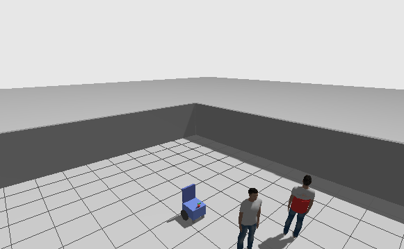
シミュレーションは、物理シミュレータ Gazebo の中に、車椅子・本人・通行人の 3 体を置いて動かす。車椅子は、カメラと LiDAR(レーザで周囲の距離を測るセンサ)を持つ。追従ノードは、センサの情報から追う相手を決め、車椅子に速度の指令を出す。本人と通行人は、それぞれ人移動ノードが決まった道筋で歩かせる。計測ノードは、シミュレータが知っている全員の正解位置と、追従ノードが報告する追従状態を比べ、本人を追っていた時間などを記録する。
図 2 は、これらの部品と、部品の間を流れるデータを示したものである。左がシミュレータ、右が ROS 2(ロボットのプログラム同士をつなぐ仕組み)のノードである。追従ノードは 3 種類あり、計測のたびに 1 つを選んで起動する。追従ノードの中身は 3 章、計測ノードの判定方法は 4 章で説明する。
Re-ID 方式には、2026 年 10 月の作業で 5 つの改良を加え、評価シナリオの不具合も 1 つ直した。改良後の Re-ID 方式は、180 秒の計測 3 本の中央値で、時間の 96.3% のあいだ本人を追い、通行人を追った時間は 0.8% であった。比較した 2 つの最近傍方式は、時間の 41〜43% のあいだ通行人を追った。また、通行人の服装を 5 通りに変えても、通行人を追った時間は 0.9〜2.3% に収まった。ただし、服の違いがズボンにしかない場合と、全く同じ服の場合には、色だけでは見分けられない。これらの数字の内訳は 6 章で示す。
シミュレーションは、Apple Silicon の Mac 上の Docker コンテナで動かす。表 1 は、コンテナに入っているソフトウェアと版である。物体検出 AI には、Ultralytics 社の YOLOv8n を、入力 320 ピクセルで使う。YOLOv8n は YOLO の中で最も小さいモデルで、このコンテナでは 1 秒あたり 3〜5 枚の画像を処理できる。
作業フォルダは、iCloud や Google Drive の同期の対象外である、ローカルのフォルダに置く。同期の対象のフォルダを Docker でコンテナに共有すると、ファイルが読めない、書けないといった誤りが起きるからである。2026 年 8 月には、Google Drive 上のフォルダで計測が止まった。
| 役割 | ソフトウェア | 版 |
|---|---|---|
| ロボットのプログラムの基盤 | ROS 2 | Humble |
| 物理シミュレータ | Gazebo(ignition) | Fortress |
| Gazebo と ROS 2 の橋渡し | ros_gz(apt で導入) | Humble 用 |
| 人の検出 | Ultralytics YOLOv8n | ultralytics 8.4.183 |
| AI の計算 | PyTorch | 2.14.1 |
| コンテナ | Docker イメージ wheelchair-follow:humble | 2026-10-20 再構築 |
車椅子モデルは、長さ 0.55 m、幅 0.50 m の箱に、半径 0.17 m の駆動輪 2 つを付けたものである。左右の車輪の回転速度を変えて、前進と旋回をする。表 2 は、車椅子が持つ 2 つのセンサの仕様である。カメラは、色の画像と、画素ごとの距離を表す深度画像を同時に出す RGB-D カメラである。
図 3 は、車椅子と本人を横から見た図である。カメラは床から 0.67 m の高さにあり、上下に ±31° の範囲を写す。そのため、カメラから 0.8 m の距離では、床から 1.16 m より上が画面に入らない。人がカメラに近づくと、頭と胸が画面の外に出るのである。この性質は 5.4 節の改良で問題になる。紫の帯は、5.4 節で色を取る領域として使う、床から 0.95〜1.35 m の高さを示す。
| センサ | 取り付け位置 | 視野 | 解像度・周期 | 距離 |
|---|---|---|---|---|
| RGB-D カメラ | 車体中心の前 0.255 m、床から 0.67 m | 水平 78°(1.36 rad)、垂直 62° | 640×480 画素、10 Hz | 0.1〜10 m |
| LiDAR | 車体中心の前 0.225 m、床から 0.57 m | 水平 360° | 360 点、10 Hz | 0.2〜10 m |
評価は、壁に囲まれた 12 m 四方の部屋で行う。本人は、1 周約 15 m の八角形のコースを 0.4 m/s で歩き、約 38 秒で 1 周する。通行人は、コースの中央を通る x = 1.8 m の線上を、y = −3 m と 3 m の間で 0.6 m/s で往復する。通行人は約 10 秒ごとにコースを横切るので、車椅子と本人の間に割り込む場面が 180 秒の計測で 15 回以上ある。
通行人は、車椅子が 1 m 以内に近づくと、車椅子から離れる向きへ進路を曲げて避ける。2026 年 10 月 20 日より前は、通行人は車椅子が 0.35 m 以内に来ると立ち止まる設定だった。この設定で起きた問題と、避ける動きに変えた理由は 5.6 節で述べる。図 4 は、部屋とコースを上から見た図に、ある計測の 20〜60 秒の 3 体の軌跡を重ねたものである。濃い灰の線が車椅子で、本人の後ろをコースの内側寄りに付いていっている。
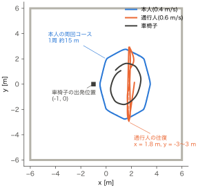
本資料では 3 つの追従方式を比べる。3 つとも、追う相手までの距離を 1.2 m に保つように前進の速さを決め、相手の方向に向くように旋回の速さを決める。違いは、追う相手の選び方にある。
LiDAR の点の並びを、隣どうしが 0.35 m 以上離れた所で区切り、幅 0.05〜0.7 m のかたまりを人の候補とする。最初は最も近い候補を追う。その後は、前回の位置から 0.8 m 以内にある候補を同じ相手とみなす。LiDAR は 360° を測れるので見失いにくい。しかし、人の脚のかたまりには服の情報がないので、本人と通行人を区別できない。
カメラ画像から YOLO で人を検出し、深度画像から各候補までの距離を求めて、最も近い候補を追う。距離は、検出した枠の中央 1/3 の領域にある深度の値のうち、小さい方から 25% の位置の値とする。人は背景より手前にあるので、小さい側の値を取ると背景の深度に引っ張られないからである。この方式も、近い通行人が現れるとそちらに移る。
Re-ID 方式は、YOLO の候補それぞれについて、距離・方向に加えて服の色を調べる。色は、HSV 色空間の色相(30 段階)と彩度(32 段階)の 2 次元ヒストグラムで表す。明るさを使わないのは、影や照明で変わりやすいからである。2 つのヒストグラムの似ている度合いは、バタチャリヤ距離 d から 1 − d として計算し、色類似度と呼ぶ。色類似度は、同じ色の分布なら 1、全く重ならなければ 0 になる。
図 5 は、カメラの画像 1 枚ごとの処理の流れである。最初に見つけた最も近い人を本人として登録し、その時の色ヒストグラムを 2 つ保存する。1 つは、以後ずっと変えない原本である。もう 1 つは、照明の変化に合わせて少しずつ更新する記憶である。登録後は、距離と色類似度で明らかに違う候補を除いたうえで、次の式のスコアが最も高い候補を本人とする。
位置の連続性は、前回本人を見た距離と方向に近いほど 1 に近づく値である。スコアが 0.45 未満なら、その画像には本人がいないとみなす。表 3 は、Re-ID 方式の主なパラメータの値である。5 章の改良で加えたものと値を変えたものは、その節を書いてある。
図 6 は、本人と通行人が並んで写ったカメラ画像に、処理の途中の結果を描き込んだものである。緑の枠が YOLO の検出結果、紫の枠が色ヒストグラムを取る領域である。黄色の枠は改良前に使っていた色の領域で、5.4 節で比べる。
| パラメータ | 値 | 意味 | 節 |
|---|---|---|---|
lock_max_dist | 4.0 m | 本人として登録できる最大の距離 | 3.3 |
track_max_dist | 5.0 m | 登録後に候補として認める最大の距離 | 3.3 |
w_hist / w_pos | 0.6 / 0.4 | スコアの色類似度と位置の連続性の重み | 3.3 |
accept_threshold | 0.45 | 本人と認めるスコアの最小値 | 3.3 |
hist_min_sim | 0.55 | 色類似度の下限。下回る候補は別人として除く | 5.3 |
hist_update_sim / anchor_update_sim | 0.6 / 0.7 | 記憶を更新するのに必要な、記憶と原本それぞれとの色類似度 | 5.2 |
torso_z_min / torso_z_max | 0.95 / 1.35 m | 色を取る領域の、床からの高さ | 5.4 |
hist_blur | 2 ビン | ヒストグラムをぼかす幅 | 5.5 |
lost_timeout / search_angular | 1.5 s / 0.5 rad/s | 見失いとみなすまでの時間と、探索の旋回の速さ | 3.4 |
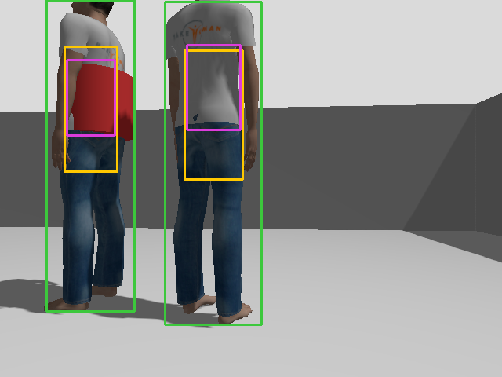
3 つの方式とも、追う相手が一定時間見えなければ見失ったとみなし、最後に相手が見えた側へ 0.5 rad/s でその場旋回して探す。見失いとみなすまでの時間は、LiDAR 最近傍方式が 1.0 秒、2 つのカメラの方式が 1.5 秒である。Re-ID 方式は、見失っている間も原本と記憶を残すので、再び視野に入った本人を色で見つけ直せる。2026 年 8 月までは見失うと停止していたが、一度はぐれると復帰できず、計測時間の 65〜86% が停止で埋まった。そのため旋回して探す動きに変えた。
計測ノードは 0.1 秒ごとに、追従ノードが今追っている相手が本人か通行人かを判定する。追従ノードは、追っている相手までの距離と方向を、追従状態として報告する。計測ノードは、シミュレータが出す車椅子の正解位置と向きを使い、報告された距離と方向を部屋の座標に直して、追っている相手の推定位置とする。推定位置から 1.2 m 以内に本人か通行人の正解位置があれば、近い方を追っている相手とする。図 7 は、この判定を上から見た図である。この例では、推定位置が本人の円の中にあるので、本人を追っていると判定する。
表 4 は、この判定から計算する 4 つの指標である。3 つの割合は、計測時間を「本人を追った」「通行人を追った」「どちらでもない」に分けたものなので、足すと 100% になる。本資料で最も重視する指標は別人追従率である。ID 維持率だけを見ると、誰かを追い続ける方式が有利になるからである。例えば LiDAR 最近傍方式は見失いがほぼ 0% だが、その分、時間の約 4 割は通行人を追っている。
| 指標 | 定義 | 良い方向 |
|---|---|---|
| ID 維持率 | 本人を追っていた時間 ÷ 計測時間 | 大きい |
| 別人追従率 | 通行人を追っていた時間 ÷ 計測時間 | 小さい |
| 見失い率 | どちらも追っていなかった時間 ÷ 計測時間。探索中、本人がいないと判断した時間、推定位置が誰からも 1.2 m 以上離れた時間を含む | 小さい |
| 距離維持誤差 | 本人を追っていた間の、本人との距離と目標 1.2 m との差の平均 | 小さい |
1 回の計測は、シミュレーションの時間で 180 秒である。同じ設定でも、計測ごとに結果が大きく変わる。例えば改良前の Re-ID 方式を同じ設定で 3 回計測すると、ID 維持率は 53.3%、61.5%、85.2% であった。シミュレーションの物理計算や YOLO の処理の間隔が毎回少しずつ違い、本人を見失う場面がある回とない回が出るからである。従って、1 つの条件を 3 回以上計測し、中央値と最小・最大で示す。本資料の表は「中央値 [最小−最大]」の形で書く。また、比べる条件を 1 本ずつ交互に計測し、計算機の負荷の違いが一方の条件にだけ偏らないようにした。
指標だけでは、見失いや取り違えの原因が分からない。そこで Re-ID 方式は、画像 1 枚ごとに、すべての候補の距離・方向・色類似度・位置の連続性・スコアと、除いた理由を診断ログとして出す。計測ノードは、このログに本人と通行人の正解の距離と方向を添えて、debug_*.jsonl に保存する。5 章の原因の分析は、すべてこの診断ログと、0.1 秒ごとの記録の CSV から行った。表 5 は、診断ログの 1 行に入る項目である。
| 項目 | 内容 |
|---|---|
cands | 候補ごとの [距離 m, 方向 rad, 色類似度, 位置の連続性, スコア, 除いた理由]。理由は far(5 m 超)か color(色類似度が下限未満) |
accepted | この画像で本人と認めた候補があったか |
t_lost / min_sim | 最後に本人を見てからの秒数と、その時点の色類似度の下限 |
gt_person / gt_person2 | 本人と通行人の正解の [距離 m, 方向 rad]。計測ノードが追加する |
2026 年 8 月の計測では、Re-ID 方式の見失い率が 75.9% と高かった。10 月の作業では、診断ログで見失いの原因を 1 つずつ調べ、表 6 の順に直した。各節は、困ったこと、行ったこと、その結果、残った点の順に書く。
Re-ID 方式は、RGB 画像で見つけた人の枠の位置を使って、深度画像から距離を読む。改良前は、RGB 画像を受け取った時点で手元にある最新の深度画像を使っていた。2 つの画像は届く順番が一定しないので、1 フレーム前の深度画像を使うことがあった。車椅子が旋回していると、1 フレームの間に人の位置が画像の上でずれる。すると、枠の中に背景の壁が入り、同じ人の距離が 2.6 m と 6.5 m の間で交互に跳ねた。本人の候補の 5% は、距離が 1.5 m 以上ずれていた。
従って、深度画像を直近 5 枚保持し、RGB 画像と同じ時刻の深度画像を使うようにした。RGB 画像の方が先に届いた場合は、その RGB 画像を保留し、同じ時刻の深度画像が届いてから処理する。このようにすることで、距離が 1.5 m 以上ずれる候補は 1% に減った。ただし、最初は保留せずに RGB 画像を捨てる作りにしたところ、処理できる画像が毎秒 3.4〜4.8 枚から 3.0 枚に減った。保留する作りに変えて、毎秒 3.2〜4.6 枚に戻した。
記憶の色ヒストグラムは、候補との色類似度が 0.6 を超えると、その候補の色を 1 割混ぜて更新する。照明や向きの変化に合わせるためである。しかし、本人に似た色の通行人を一度本人と認めると、記憶が通行人の色に寄っていく。図 8 は、その様子を記録した計測の色類似度の推移である。13〜17 秒に、車椅子の目の前 0.4 m で止まった通行人を、色類似度 0.6〜0.7 で本人と認めている。その後、26〜28 秒に本人が正面 3.2 m に戻ったが、記憶との色類似度は 0.32 しかなく、本人は棄却された。この回は 21 秒間本人を見失った。
従って、記憶を更新する条件に、変えない原本との色類似度が 0.7 を超えることを加えた。このようにすることで、通行人を一時的に認めても、記憶は原本から離れた色へは寄らない。ただし、本人の服が照明で原本と大きく違って見え続ける場合は、記憶がその変化に付いていけない。
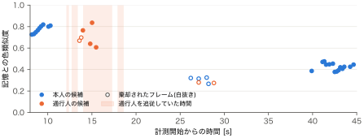
改良前は、色類似度の下限 0.25 を、見失っている時間が長いほど最大 1/4 まで下げていた。記憶がずれて全員を棄却し続ける状態から抜け出すためである。しかし、本人を追っている間も下限は約 0.21 まで下がっており、色で候補を除く働きはほとんどなかった。ある計測では、通行人が本人の真正面に重なり、2 人が 1 つの枠として検出された。この枠の色類似度は 0.37〜0.50 だったが、位置の連続性が 1.0 なので、スコアは次のように 0.45 を超えた。
その結果、車椅子は 19.5 秒間通行人を追った。
従って、下限を下げる仕組みを止め、下限の値を色類似度の分布から決め直した。図 9 の左は、5.2 節の改良後に集めた、本人と通行人の色類似度の分布である。本人の中央値は 0.90、通行人の中央値は 0.45 であった。下限を 0.55 にすると、本人を誤って除く割合は 2.6%、通行人を通してしまう割合は 7.9% になる。このようにすることで、別人追従率は 3.8% から 1.8% に下がった。ただし、本人を除く割合が 2.6% あるため、見失い率は 12.4% から 40.1% に増えた。この見失いの多くは、本人が近づいたときに起きており、次の 5.4 節で直す。
改良前は、色を取る領域を、検出した枠の上から 15〜55% の範囲としていた。人の全身が枠に入っていれば、この範囲は胸から腰に当たる。しかし 2.2 節で述べたように、カメラから約 1 m より近いと頭と胸が画面の外に出て、枠の上端が画面の上端で切れる。すると、上から 15〜55% の範囲はジーンズの位置にずれる。図 10 は、カメラから 1.1 m の本人の画像である。黄色の枠の改良前の領域はジーンズを、紫の枠の改良後の領域はシャツを捉えている。改良前の本人の色類似度の中央値は、カメラから 0.5 m で 0.47、1.0 m で 0.67 まで下がり、通行人の 0.40〜0.43 と重なっていた。
従って、色を取る領域を、床からの高さで決めるようにした。床からの高さ z の点がカメラから距離 d にあるとき、画像の上での行 v は、ピンホールカメラの関係から次の式で求まる。
240 は画像の縦の中央、0.67 m はカメラの高さ、0.68 rad は水平の視野の半分である。この式に z = 1.35 m と 0.95 m を入れた 2 つの行の間を、色を取る領域とする。例えば d = 3.0 m なら 150〜203 行目、d = 1.0 m なら画面の上端から 129 行目までになる。このようにすることで、枠が画面の端で切れても、常に床から 0.95〜1.35 m の胸の位置を見る。図 9 の右は改良後の分布で、本人の中央値は 0.91 とほぼ変わらず、通行人の中央値は 0.21 まで下がった。カメラから 1〜3 m では、本人の 95% が 0.83 以上、通行人の中央値は 0.14〜0.28 であった。ただし、0.95〜1.35 m という高さは、通行人の赤い帯の高さが 0.98〜1.33 m であることを知ったうえで決めた。この点は 6.2 節で、服装を変えて確かめる。
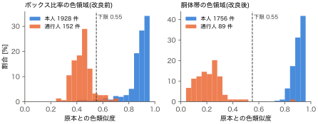
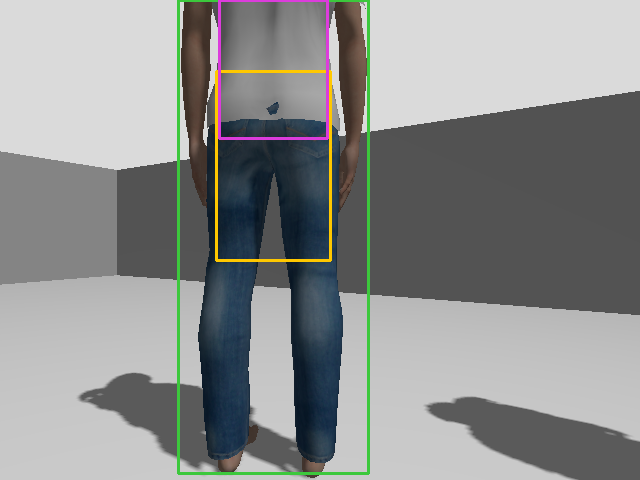
6.2 節で本人に赤い服を着せたところ、ID 維持率が 23.4% まで下がった。通行人を追った時間は 0.3% なので、取り違えではなく、本人を棄却していたのである。赤い服の画素は彩度が高く、その平均は照明と向きによってフレームごとに 172〜194 の間で動く。色ヒストグラムの彩度は 0〜255 を 32 段階に分けるので、1 段階の幅は 8 である。彩度が 1〜2 段階動くだけで、画素の大半が隣の段階に移り、色類似度が下がる。図 11 の左は、平均彩度 193 と 198 の 2 枚の画像の彩度の分布である。2 枚とも同じ赤い服なのに、色類似度は 0.38 しかない。灰色の服は彩度がほぼ 0 で 1 つの段階に収まるので、元のシナリオではこの問題が表に出なかった。
従って、ヒストグラムを、色相と彩度の両方向に幅 2 段階のガウス関数でぼかしてから比べるようにした。色相は 0° と 360° がつながっているので、両端を反対側の値で補ってからぼかす。このようにすることで、図 11 の右のように 2 枚の分布が重なり、色類似度は 0.66 になった。赤い服の本人どうしの色類似度の下位 5% の値は、0.14 から 0.42 に上がった。方向を分けて調べると、色相方向だけぼかした場合は 0.14 のままで、効いているのは彩度方向である。ただし、ぼかすと色の細かい違いも見えにくくなる。6.3 節の比較では、ぼかしによって他の服装の見分けが悪くなることはなかった。
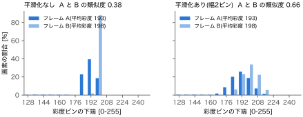
見失いの多い回を調べると、通行人が車椅子に接したまま、両方が動けなくなる場面があった。通行人は、車椅子が 0.35 m 以内に来ると立ち止まる設定だった。一方で車椅子は、車体の角が中心から 0.37 m の所にあり、通行人に当たって旋回できない。図 12 は、この状態が起きた計測の、通行人までの距離と車椅子の旋回の速さである。133 秒に通行人が 0.33 m に来てから計測の終わりまで、距離は変わらず、旋回は 0 度/s のままである。この状態は 3 本の計測で起き、どれも約 55 秒、計測時間の約 3 割を見失いで埋めた。
従って、通行人は立ち止まらず、車椅子が 1 m 以内に来たら車椅子から離れる向きへ進路を曲げて歩き続けるようにした。実際の歩行者も、車椅子に接したまま立ち止まり続けることはなく、避けて通るからである。このようにすることで、通行人が車椅子に最も近づく距離は 0.45 m となり、0.5 m 以内にいた時間は 180 秒中 1.0 秒になった。ただし、この変更でシナリオそのものが変わった。通行人が車椅子と本人の近くを通る時間が増えたので、最近傍の 2 方式の別人追従率は 8 月の 12.5% と 21.2% から、40% 台に上がった。そのため、改良の前後と方式の違いは、すべて新しいシナリオで計測し直して比べた。
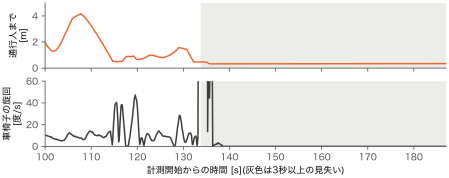
表 6 は、5.1〜5.4 節の改良を順に加えたときの Re-ID 方式の成績である。この表は 5.6 節の変更より前のシナリオで計測したので、6 章の数字とは直接比べられない。5.3 節の段階で見失い率が増え、5.4 節の段階で戻っている。表の見失い率の大きい回には、5.6 節で述べた約 55 秒の停止が含まれる。
| 段階 | ID 維持率 % | 別人追従率 % | 見失い率 % |
|---|---|---|---|
| 改良前 | 61.5 [53.3−85.2] | 4.1 [2.9−5.2] | 33.4 [10.7−43.7] |
| 5.1 時刻合わせ(RGB 画像を捨てる作り)と 5.2 原本 | 59.8 [52.1−60.7] | 3.5 [2.8−8.7] | 36.6 [36.4−39.1] |
| 5.1 の RGB 画像を保留する作りへの修正 | 83.8 [58.7−84.5] | 3.8 [1.0−13.7] | 12.4 [1.8−40.3] |
| 5.3 色類似度の下限 0.55 | 58.1 [57.9−87.0] | 1.8 [1.8−3.1] | 40.1 [9.9−40.2] |
| 5.4 胴体帯による色領域 | 80.4 [65.7−83.7] | 1.2 [1.1−1.8] | 18.3 [15.2−32.6] |
5.6 節の新しいシナリオで、4 つの条件を 3 本ずつ交互に計測した。比べたのは、改良後の Re-ID 方式、8 月の設定の Re-ID 方式、YOLO 最近傍方式、LiDAR 最近傍方式である。8 月の設定は、5.1〜5.5 節の改良をすべて launch の引数で無効にしたものである。図 13 は 3 つの割合を方式ごとに並べたもので、棒が中央値、横線が最小から最大の範囲である。表 7 は同じ結果の数値で、距離維持誤差も加えた。
改良後の Re-ID 方式は、ID 維持率が 96.3%、別人追従率が 0.8% であった。8 月の設定の Re-ID 方式は別人追従率が 17.8%、最近傍の 2 方式は 41〜43% である。改良後の Re-ID 方式の ID 維持率と別人追従率は、3 本の範囲が他の 3 条件と全く重ならない。距離維持誤差はどの方式も 0.5〜0.7 m である。追従ノードは、カメラから本人の体の表面までの距離を 1.2 m に保つ。一方で計測ノードは、車椅子の中心から本人の中心までの距離で誤差を計算する。カメラは車椅子の中心より 0.255 m 前にあり、体の表面は人の中心より約 0.15 m 手前にあるので、約 0.4 m の差が誤差に含まれるからである。
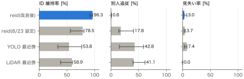
| 方式 | ID 維持率 % | 別人追従率 % | 見失い率 % | 距離維持誤差 m |
|---|---|---|---|---|
| Re-ID 方式(改良後) | 96.3 [91.4−96.5] | 0.8 [0.7−1.0] | 3.0 [2.8−7.6] | 0.7 |
| Re-ID 方式(8 月の設定) | 78.5 [56.3−80.8] | 17.8 [14.3−40.8] | 3.7 [2.9−5.0] | 0.6 |
| YOLO 最近傍方式 | 53.8 [33.6−76.7] | 42.8 [15.4−59.0] | 7.4 [3.3−7.9] | 0.6 |
| LiDAR 最近傍方式 | 58.9 [38.4−59.9] | 41.1 [40.1−61.6] | 0.0 [0.0−0.0] | 0.5 |
6.1 節までの評価では、通行人だけが胸に赤い帯を巻くという 1 種類の服装しか使っていない。5.4 節の色領域の高さと 5.3 節の下限は、この服装を見て決めた。そこで、人の動きと部屋はそのままに、服装だけを変えた 5 つのワールドを作り、改良後の Re-ID 方式を 3 本ずつ計測した。図 14 は 6 つのワールドの服装の模式図で、紫の帯が色領域の高さである。図 15 は、各ワールドの計測で実際に色領域として切り出された画像の例である。
表 8 は計測の結果である。本人が赤い服の swap、赤い帯が色領域から一部はみ出た high、色相の近い水色と紺の similar では、別人追従率は 0.9〜2.3% であった。元の test の 0.9% と同じ程度で、色領域と下限が元の服装だけに合わせたものではないことが分かる。一方で、服の違いが色領域の外にしかない pants では 6.9%、全く同じ服の identical では 22.4% になった。この 2 つは 7.1 節で考察する。
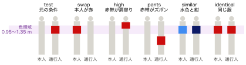
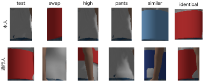
| ワールド | 服装 | ID 維持率 % | 別人追従率 % | 見失い率 % |
|---|---|---|---|---|
| test | 通行人だけ胸に赤い帯 | 95.3 [88.0−96.2] | 0.9 [0.6−1.1] | 4.0 [2.7−11.1] |
| swap | 本人だけ胸に赤い帯 | 96.0 [95.3−96.0] | 1.1 [0.5−1.4] | 3.3 [2.9−3.5] |
| swap 平滑化なし | 同上、5.5 節の改良を無効 | 23.4 [22.3−24.4] | 0.3 [0.0−0.4] | 76.2 [75.6−77.4] |
| high | 通行人の赤い帯が床から 1.20〜1.50 m | 95.6 [92.2−95.7] | 2.3 [2.0−3.2] | 2.3 [2.1−4.5] |
| pants | 通行人の赤い帯が床から 0.45〜0.85 m | 90.0 [77.7−90.6] | 6.9 [6.8−14.3] | 3.1 [2.6−8.0] |
| similar | 本人が水色、通行人が紺 | 96.2 [96.0−96.7] | 0.9 [0.6−0.9] | 2.9 [2.7−3.0] |
| identical | 2 人とも胸に赤い帯 | 71.4 [63.1−90.4] | 22.4 [6.6−31.4] | 5.5 [3.0−6.2] |
5.5 節のぼかしを選ぶ前に、色の表し方の候補を、計測ではなく保存した画像で比べた。6 つのワールドでシミュレーションを 150 秒ずつ動かし、色領域の画像 1,995 枚を、本人か通行人かの正解の印を付けて保存した。各ワールドで、カメラから 1.5〜3 m の本人の画像 5 枚を原本とし、原本と他の画像との類似度を計算した。表 9 の各欄の左の値は AUC で、本人の類似度が通行人より高くなる確率である。1 なら完全に分けられ、0.5 なら見分けられていない。右の値は、本人を誤って除く割合を 5% にしたときに、通行人を通してしまう割合である。
ぼかしだけが、swap の通過率を 89% から 3% に下げ、他のワールドを悪化させなかった。明るさを加えた表し方は similar を分けられるが、high と pants が悪化した。pants と identical は、どの表し方でも通行人の通過率が 58% 以上であった。従って、この 2 つは色の表し方ではなく、色を取る高さや、色以外の手がかりで解くべき問題である。
| 表し方 | test | swap | high | pants | similar | identical |
|---|---|---|---|---|---|---|
| 色相 30 × 彩度 32、ぼかしなし | 1.00 / 0% | 0.88 / 89% | 0.99 / 5% | 0.84 / 58% | 1.00 / 0% | 0.32 / 100% |
| 色相 16 × 彩度 4 | 1.00 / 0% | 0.90 / 77% | 0.99 / 4% | 0.84 / 62% | 1.00 / 0% | 0.43 / 99% |
| 色相 30 × 彩度 32、ぼかしあり | 1.00 / 0% | 1.00 / 3% | 0.99 / 4% | 0.85 / 60% | 1.00 / 0% | 0.48 / 100% |
| 色相 12 × 彩度 4 × 明るさ 4 | 1.00 / 0% | 0.95 / 34% | 0.90 / 47% | 0.69 / 83% | 1.00 / 0% | 0.37 / 100% |
| 色相 8 × 彩度 3 × 明るさ 3 | 0.99 / 10% | 1.00 / 0% | 0.84 / 82% | 0.68 / 86% | 1.00 / 0% | 0.69 / 92% |
| Lab 色空間の平均色 | 0.98 / 10% | 0.98 / 9% | 0.89 / 40% | 0.57 / 83% | 0.89 / 74% | 0.33 / 97% |
Re-ID 方式は、床から 0.95〜1.35 m の胸の色だけで本人を見分ける。従って、胸の色が同じで、違いがズボンにしかない pants では、別人追従率が 6.9% になった。全く同じ服の identical では 22.4% である。それでも identical の値が最近傍の 2 方式の 41〜43% より低いのは、スコアの 4 割を占める位置の連続性が、急に別の位置に現れた通行人を退けるからである。この 2 つの条件に対応するには、胸に加えてズボンの高さの色も比べる方法や、歩き方・背の高さのような色以外の手がかりを加える方法が考えられる。ただし、比べる部位を増やすと、その部位が画面から切れる近距離での扱いを、5.4 節と同じように考える必要がある。
色類似度の下限 0.55 と色領域の高さは、評価と同じシナリオの分布を見て決めた。6.2 節の服装を変えた検証で、決め方が元の服装に合わせすぎていないことは確かめた。しかし、検証に使った服装も 1 本の帯の色と高さを変えただけで、柄のある服や、上着の前を開けた服のような、実際の服装の多様さには及ばない。実機で評価する際には、まず 6.3 節と同じ手順で色領域の画像と正解の印を集め、表し方と下限を確かめてから計測するのがよい。この手順の道具は 8.7 節で説明する。
2026 年 8 月 23 日に計測した 3 方式の結果は、応募書類に載っている。その時の別人追従率は、Re-ID 方式 5.0%、YOLO 最近傍方式 12.5%、LiDAR 最近傍方式 21.2% であった。この数字は、本資料の 6 章の数字とは直接比べられない。理由は 2 つある。1 つ目は、5.6 節で通行人の動きを変えたことである。2 つ目は、Docker のイメージを作り直し、YOLO と PyTorch の版と処理の速さが変わったことである。8 月の設定の Re-ID 方式を新しい環境で計測し直すと、ID 維持率は 8 月の 19.1% に対して 61.5% であった。応募書類を更新する場合は、4 方式すべてを表 7 の数字でそろえる必要がある。
見失い率の大部分は、本人が視野の外に出た時間であった。そこで、本人の位置と歩く速さから今いそうな位置を予測し、そちらへ向き直って探す予測探索を作った。しかし、3 本ずつ比べると、一定の速さで旋回する従来の探索との差は出なかった。ID 維持率は、予測探索が 57.2% [47.7−83.2]、従来の探索が 58.1% [57.9−87.0] である。従って、予測探索は launch の引数 predict_search で選べるようにして、既定では使わない。差が出なかった理由の 1 つとして、車椅子の位置の情報が遅れて届くことが考えられる。追従ノードは YOLO の処理中に他のメッセージを受け取れず、6.3 節の画像を集めた際には、位置の情報が画像より 0.3〜0.4 秒古いことがあった。予測探索はこの古い位置から予測するので、旋回中は予測がずれる。この点はまだ確かめていない。
作業フォルダは、iCloud などの同期の対象外の場所に置く。以下では、リポジトリ chibariyo-dance-mimic の follow フォルダで実行する。コンテナは、ブラウザで画面を見るためにポート 6080 を使う。別のコンテナが同じポートを使っている場合は、先に止める。コンテナに入るときは、必ず -u ubuntu を付ける。root で入ると、Gazebo の画面が開けずに止まり、さらに出力先が共有フォルダの外になるからである。
cd chibariyo-dance-mimic/follow docker compose build # 初回のみ。イメージ wheelchair-follow:humble を作る docker compose up -d # コンテナ wheelchair_follow を起動 docker exec -u ubuntu wheelchair_follow bash -lc \ 'cd ~/ros2_ws && colcon --log-base /tmp/colcon_log build --symlink-install --base-paths src'
Gazebo の画面は、ブラウザで http://localhost:6080 を開くと見える。
計測は、全部の部品を一度に起動する launch ファイル crowd_demo.launch.py で行う。run_measure.sh は、この launch を起動し、シミュレーションの時間が指定の秒数に達したら止めて、まとめを確定させる。引数は、方式、秒数、実時間での上限の秒数、launch に渡す追加の引数の順である。ファイル名に入る名前は、環境変数 TAG で付ける。
docker exec -u ubuntu -e TAG=reid_a wheelchair_follow bash -lc \ '/home/ubuntu/ros2_ws/run_measure.sh reid 180 2400 "world:=crowd_swap.world"'
手で動かす場合は、コンテナの中で次のように起動し、Ctrl+C で止める。止めた時点でまとめが書き出される。
ros2 launch wheelchair_gazebo crowd_demo.launch.py method:=reid ros2 launch wheelchair_gazebo crowd_demo.launch.py method:=yolo ros2 launch wheelchair_gazebo crowd_demo.launch.py method:=lidar
run_batch.sh は、「名前|方式|launch の引数」の形の指定を順に計測する。4.2 節で述べたように、比べる条件は 1 本ずつ交互に並べる。1 本の計測には実時間で約 4 分かかる。計測の途中で src の下のコードを編集してはいけない。--symlink-install でビルドしているので、次の計測から編集後のコードで動いてしまうからである。また、ホスト側のシェルで & を付けて起動すると、シェルの終了とともに計測が途中で止まる。Claude Code から動かす場合は、バックグラウンド実行の機能を使う。
docker exec -u ubuntu wheelchair_follow bash -lc '/home/ubuntu/ros2_ws/run_batch.sh \ "new1|reid|" "old1|reid|hist_min_sim:=0.25 hist_relax:=true depth_sync:=false anchor_update_sim:=0.0 torso_roi:=false hist_blur:=0" \ "yolo1|yolo|" "lidar1|lidar|"'
表 10 は、crowd_demo.launch.py の引数である。5 章の改良は、どれも引数で無効にでき、改良前と同じ動きを再現できる。8 月の設定を再現するときの値を、右の列に書いた。
| 引数 | 既定値 | 意味 | 8 月の設定 |
|---|---|---|---|
method | reid | 追従方式。reid、yolo、lidar | − |
world | crowd_test.world | ワールドのファイル。服装を変えたものは crowd_<名前>.world | − |
out_dir / label | ~/ros2_ws/metrics / 方式名 | 出力先のフォルダと、ファイル名に入る名前 | − |
hist_min_sim | 0.55 | 色類似度の下限(5.3 節) | 0.25 |
hist_relax | false | 見失い中に下限を下げるか(5.3 節) | true |
accept_threshold | 0.45 | 本人と認めるスコアの最小値 | 0.45 |
anchor_update_sim | 0.7 | 記憶の更新に必要な原本との色類似度(5.2 節)。0 で無効 | 0.0 |
depth_sync | true | RGB 画像と同じ時刻の深度画像を使うか(5.1 節) | false |
torso_roi | true | 色領域を床からの高さで決めるか(5.4 節) | false |
hist_blur | 2 | ヒストグラムをぼかす幅(5.5 節)。0 で無効 | 0 |
predict_search | false | 予測探索を使うか(7.4 節) | false |
計測の結果は、out_dir に 3 種類のファイルで出る。表 11 は、各ファイルの中身である。RESULTS_*.md 以外は git で管理しない。
| ファイル | 中身 |
|---|---|
summary_<名前>_<日時>.txt | 4 つの評価指標、取り違えの回数、見失いから見つけ直すまでの平均時間 |
metrics_<名前>_<日時>.csv | 0.1 秒ごとの車椅子・本人・通行人の正解位置、追従状態、追っている相手、推定位置、車椅子の向き |
debug_<名前>_<日時>.jsonl | Re-ID 方式だけが出す診断ログ(表 5) |
RESULTS_<日付>.md | 手でまとめた結果と分析。計測の記録として残す |
6.2 節のワールドは、worlds/make_clothing_variants.py が crowd_test.world から生成する。生成したワールドは、帯の有無・高さ・色だけが元と違う。crowd_test.world を直したときは、生成し直してからビルドする。服装を増やすときは、スクリプトの VARIANTS に、帯の下端と上端の高さと色を加える。
cd ros2_ws/src/wheelchair_gazebo/worlds && python3 make_clothing_variants.py
ros2_ws/tools/reid_eval/ には、6.3 節の比較に使った 4 つのファイルがある。run_collect.sh はシミュレーションを起動し、collect.py が色領域の画像と車椅子・本人・通行人の正解位置を保存する。label.py は、画像の時刻の正解位置と比べて、各画像に本人か通行人かの印を付ける。正解位置は YOLO の処理中に受け取れず遅れるので、印は保存後にまとめて付ける。evalfeat.py は、色の表し方ごとに表 9 を作る。
docker exec -u ubuntu wheelchair_follow bash -lc \ '/home/ubuntu/ros2_ws/tools/reid_eval/run_collect.sh crowd_swap 150' cd ros2_ws/tools/reid_eval python3 evalfeat.py ../../metrics/collect crowd_test crowd_swap crowd_high
本資料の図のうち、データから描いたものは docs/build_figs.py が docs/img/ に作る。PDF は、Mac の Google Chrome で HTML を印刷して作る。PDF にした後は、ページを画像にして、文字の重なりやはみ出しがないかを確かめる。
python3 docs/build_figs.py "/Applications/Google Chrome.app/Contents/MacOS/Google Chrome" --headless=new \ --no-pdf-header-footer --print-to-pdf=docs/解説資料_人混み追従.pdf "file://$PWD/docs/guide.html"